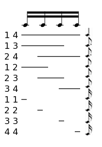
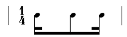
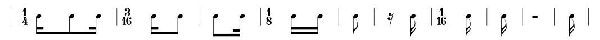
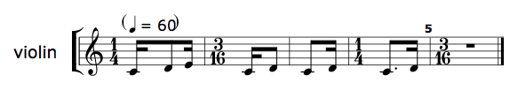

chop
+ Associated example files
NB: An exercise relating to the material covered in this tutorial can be found on the Exercises page.
The chop method is one of the features of
slippery chicken that most embodies its structural marrying of
computer-generated and instrumental resources. It is essentially a DSP
technique applied to conventionally notated musical material, dividing
rhythmic content (and its associated pitch-curves and marks) into
multiple fragments for further use, much as cutting and splicing of
audio is used to create loops and other discontinuities.
The chop method can be used as part of the technique
of intra-phrasal looping, a process by which the resulting
fragments are assembled into new sequences using
the fibonacci-transitions
function, as described in the tutorial
on intra-phrasal looping.
+ Three levels of chop
The chop method exists for three levels of rhythmic
classes, namely rthm-seq-bar,
rthm-seq, and rthm-seq-palette. Most
users will only need to use and understand the
rthm-seq-palette version of the method.
At the lowest level, the method chops a rthm-seq-bar
object into fragments, returning a list of
new rthm-seq-bar objects, each containing one
fragment. At the rthm-seq level, the method returns a
list of rthm-seq objects, each of which consists of one
of the rthm-seq-bar objects created.
At the rthm-seq-palette level, the chop
method returns a new rthm-seq-palette with the same
structure as the original, but with a further level of nesting:
Each rthm-seq of the original is replaced by a
(sub-) rthm-seq-palette consisting
of rthm-seq objects, each of which again consists of
only one of the rthm-seq-bar objects created by
fragmenting the original rthm-seq-palette.
More detail on the various levels of chop can be found
in the documentation of the source code for
rthm-seq-bar,
rthm-seq, and
rthm-seq-palette.
+ The chopping unit and chop points
The chop method fragments the source material on the
basis of a chopping unit and a collection of chop
points. The chopping unit must be a duplet rhythmic value
(e.g. 32, 's, 'e etc.) and an even subdivision of the beat basis for
the material being chopped (a quarter can be evenly subdivided into
two 8ths, four 16ths etc.). It cannot be a tuplet value (e.g. 'te,
'fe, 12 etc.).
The chop points define the start and end points of segments within one beat, each segment being a multiple of the chopping unit. Thus, with a chopping unit of a sixteenth, a beat basis of a quarter can be segmented into durations of four sixteenths, three sixteenths, two sixteenths and one sixteenth. A segment with the duration of four sixteenths spans the entire beat. Segments with the duration of three sixteenths can be found from the first to the third sixteenth of the beat, and again from the second to the fourth, both inclusive. Segments with a duration of two sixteenths can be found from the first to the second sixteenth, the second to the third, and the third to the fourth, all inclusive. The final subdivision, one sixteenth, can be found from the first to the first sixteenth, the second to the second, the third to the third, and the fourth to the fourth inclusive.
|  |
The chop points in the image above can be specified as such:
(chop object-to-chop
'((1 4)
(1 3) (2 4) ; chop points
(1 2) (2 3) (3 4)
(1 1) (2 2) (3 3) (4 4))
's)) ; chopping unit
+ Chopping the original material
The method then applies this chopping pattern to each beat of the original material. For this reason, the method can only be applied to material whose time signatures have a denominator that is equal to the beat defined by the chop points. For example, if the chop points have been defined to segment a quarter note, that instance of the method can be applied to any x/4 bar, but not to an x/8 bar. An attempt to do so will produce an error.
As the method passes through the original material, it extracts the
musical data from each successive segment of the given beat and uses
that data to create a new rthm-seq containing one
rthm-seq-bar object. Each of these new bars have the
same duration as the segment and are assigned a time signature to
reflect this duration. Thus, any rthm-seq-bar objects
created from segments with a duration of three sixteenths will have a
3/16 time signature, those made from segments of two sixteenths will
have a 1/8 time signature etc.
The method only creates sounding notes in the
new rthm-seq-bar objects from attacked notes in
the original segment. If the original segment contains the sustained
portions of notes whose attacks occurred in a previous segment, those
sustained portions are translated into rests in the
new rthm-seq.
Thus, when the above chop parameters are applied to this
original:
|  |
…the following ten fragments are created as
individual rthm-seq-bar objects:
|  |
The method assigns the newly created rthm-seq objects
sequential numerical IDs so that they can be easily accessed and
manipulated later, as described below.
+ Referencing rthm-seqs in a chopped rthm-seq-palette
The additional level of nesting created by chop when
applied to a rthm-seq-palette makes an additional ID
necessary in order to reference each rthm-seq object it
contains. The method creates consecutive numerical IDs automatically
for each of the new nested rthm-seq objects it
generates. The new rthm-seq objects can then be accessed
using a combination of the ID of the original rthm-seq
object from which the fragment objects were created and the new
object's own individual ID.
As an example, the first rthm-seq object created from
the first fragment of an original rthm-seq object with
the ID 1 is accessed using (1 1), the
second using (1 2), the third using (1 3),
etc. Correspondingly, the first rthm-seq object created
from the first fragment of an original rthm-seq object
with the ID 2 is accessed using (2 1), and
the reference (3 2) would get the
second rthm-seq object created from the second fragment
of an original rthm-seq object with the
ID 3, etc. It is important to note here that while the
IDs of the newly created objects are automatically given consecutive
numbers, the first ID of these pairs is the ID the user has assigned
to the original rthm-seq objects and therefore does not
necessarily need to be a number.
This code example uses the nested references described above:
(let* ((orig-palette (make-rsp 'orig
'((1 ((((1 4) - s e s - ))
:pitch-seq-palette ((1 2 3))))
(2 ((((1 4) - e. s - ))
:pitch-seq-palette ((1 2))))
(3 ((((1 4) - (e.) s - ))
:pitch-seq-palette ((1)))))))
(chopped-palette (chop orig-palette
'((1 4)
(1 3) (2 4)
(1 2) (2 3) (3 4)
(1 1) (2 2) (3 3) (4 4)) ; chop points
's)) ; chopping unit
(sc-chopped-example
(make-slippery-chicken
'+sc-chopped-example+
:title "sc chopped example"
:instrument-palette +slippery-chicken-standard-instrument-palette+
:ensemble '(((vn (violin :midi-channel 1))))
:tempo-map '((1 (q 60)))
:bars-per-system-map '((1 10))
:set-palette '((1 ((c4 d4 e4))))
:set-map '((1 (1 1 1 1 1)))
:rthm-seq-palette chopped-palette
:rthm-seq-map '((1 ((vn ((1 1) (1 2) (1 3) (2 1) (3 2)))))))))
(cmn-display sc-chopped-example :file "/tmp/sc-chopped-example.eps"))
…and produces the following output:
|  |
+ re-bar
Since the results of the chop method are generally very
short bars with multiple, divergent time signatures, the use of
the slippery-chicken class's
re-bar
method can be very helpful. This method regroups the fragmented
musical material into new bars that are close as possible to a
specified length. An example of the usage of this method can be found
in the tutorial
on intra-phrasal
looping.
For an example of the chop method used within a piece,
see the tutorial
on intra-phrasal
looping.